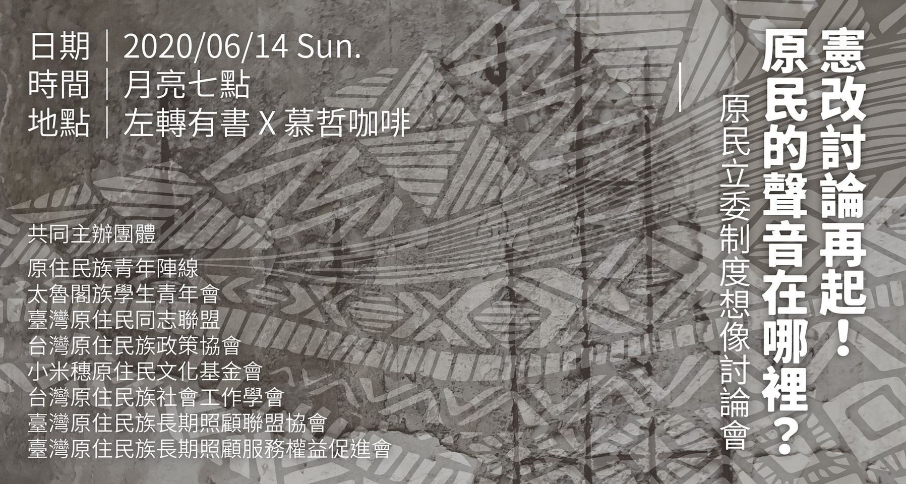
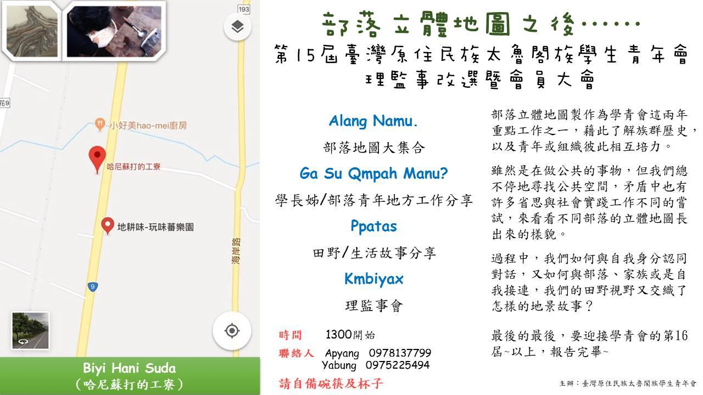

太魯閣族學生青年會

團隊成立時間：1999年
聯絡方式：地址-花蓮縣秀林鄉富世村8鄰富世145之5號, Hualienhsien, Taiwan, 974
行動電話-0972 963 605
電子郵件地址-trukuyouth@gmail.com
社群帳號：網站：https://sites.google.com/view/truku-youth/
FB：https://www.facebook.com/truku.org/about?locale=zh_TW
活動經歷

憲改討論再起！原民的聲音在哪裡？-原民立委制度想像討論會
時間：2020年6月14日2020台灣總統大選過後，蔡英文第二任的這四年，推動憲改的聲音再次從民間響起。然而長期以來，對於原住民族在憲改中的想像卻十分薄弱、也缺乏主體性。憲法中除了原則性的原民權利肯認條文外，最直接具體的原民議題就是原住民立委席次與選制選區，這也是每次選舉都是原民社群熱門的討論題目，但僅止於各抒己見的想法表達。 本次討論會，希望針對原民立委制度的各種想像，做一個深入的交叉討論及分析，討論會的規劃上沒有主講人，而是透過主持人以公民審議的討論方式進行。 我們發起這次以原住民族為主體的憲改討論會，期待是一個串聯、腦力激盪、逐步形成共識的開始，希望邀請所有對憲改議題有想法的原住民族團體或個人能夠和我們一起串接起來，一起發聲！

第15屆台灣原住民太魯閣族學生青年會會員大會
時間：2018年4月8日部落立體地圖製作為學青會這兩年重點工作之一，藉此了解族群歷史、青年或組織相互培力。 雖然是在做公共的事物，但我們總不停地尋找公共空間，矛盾中有許多省思與社會實踐上的各種嘗試，究竟不同部落的立體地圖長出怎樣的樣貌。 過程中，我們如何與自我身分認同對話，又如何與部落、家族或是自我接連？我們的田野視野交織了哪些豐富的地景故事？ 最後的最後，要迎接學青會的第16屆~
太會聚之花聚篇
透過太魯閣族學青會的聚會，讓任何想要交流的朋友們一同參與，不限任何族群，可以一起一起分享生活中的樂趣。日期：2018年12月23日(日)
時間：13:00 - 22:00
地點：勒巴克的老屋(花蓮縣萬榮鄉西林村4鄰48號)
活動內容：
1、一起做吃的(將會開放戶外廚房，帶你的食材一起分享吧。(如需特殊電器，請自備)
2、沒有主題的分享，想談什麼議題，就談。
3、沒有所謂的固定觀眾，有人聽就是你的觀眾
4、沒有特別的講者，你肯分享，你就是講者。
5、享受音樂及影像(老屋備有投影及小喇叭)
6、時間夠你好好交流，所以請大家可以將步調放慢，一起享受一起一起的時光。